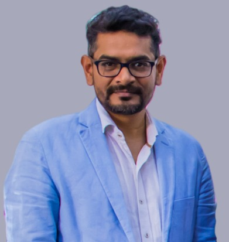

Federated Learning
Privacy-preserving distributed learning, client selection, optimization and secure collaborative intelligence.
Hello, I am

I am an Associate Professor at Bennett University with a Ph.D. in Information Technology from IIIT Allahabad.
My research spans Federated Learning, Artificial Intelligence, Internet of Things, Wireless Sensor Networks, localization, clustering and intelligent networked systems. Alongside research, I contribute to student mentoring, curriculum development, academic coordination and technology-enabled learning.
Current and continuing research themes across intelligent systems and connected computing.
Privacy-preserving distributed learning, client selection, optimization and secure collaborative intelligence.
Deep learning, graph learning and optimization for intelligent networked applications.
Connected sensing, consumer IoT, intelligent monitoring and cyber-physical systems.
Manifold learning, low-cost localization, clustering and energy-efficient wireless sensor networks.
Vishal Krishna Singh, Vins Patel, Neeraj Jain, Chhaya Singh, Rajkumar Singh Rathore and W. Jiang
Shruti Gupta, Ashish Kumar, R. D. Garg and Neeraj Jain
Neeraj Jain, Vishal Krishna Singh, Chhaya Singh, Gaurav Tripathi, Rajkumar Singh Rathore and Divyanshu Chaudhary
Neeraj Jain, Chhaya Singh, Vishal Krishna Singh, Rajkumar Singh Rathore, Norah Saleh Alghamdi and Chaminda Hewage
Vishal Krishna Singh, Neeraj Jain, Gaurav Tripathi and Sharad Sahani
Chhaya Singh, Neeraj Jain, Neeru Adlakha and Kamal Raj Pardasani
Neeraj Jain, Shekhar Verma and Manish Kumar
Neeraj Jain, Shekhar Verma and Manish Kumar
Neeraj Jain, Shekhar Verma and Manish Kumar
Neeraj Jain, Shekhar Verma and Manish Kumar
V. K. Chaurasiya, N. Jain and G. C. Nandi
Research work complemented by hands-on laboratory development and technology-enabled learning.
Bennett University, Greater Noida
Jaypee Institute of Information Technology, Noida
Indian Institute of Information Technology, Bhopal
Indian Institute of Information Technology, Allahabad
SCOPE College of Engineering, Bhopal
Oriental Institute of Science and Technology, Bhopal
Department of Information Technology, IIIT Allahabad
SCOPE College of Engineering, Bhopal
Leadership and committee contributions across workshops, summer schools and technical conferences.
Reviewer for international and national journals and conferences including IEEE Sensors Letters, IEEE Sensors Journal, IEEE Transactions on Industrial Informatics, SNCS, ICPS, ICI, MISP, IC2E3 and IC3.
Successfully completed training to become a Coach of AI for Youth Program, organized by Dell Technologies and Intel Digital Readiness in collaboration with JIIT Noida.
Lecture session in FDP on Green IoT for Sustainable Development, JIIT Noida, 13–17 June 2022.
Lecture session in ATAL Five Days Online FDP on Telemedicine and Digital Healthcare: Opportunities & Threats, Rabindranath Tagore University, 17–21 May 2021.
For research collaboration, academic engagement, invited talks and professional networking.